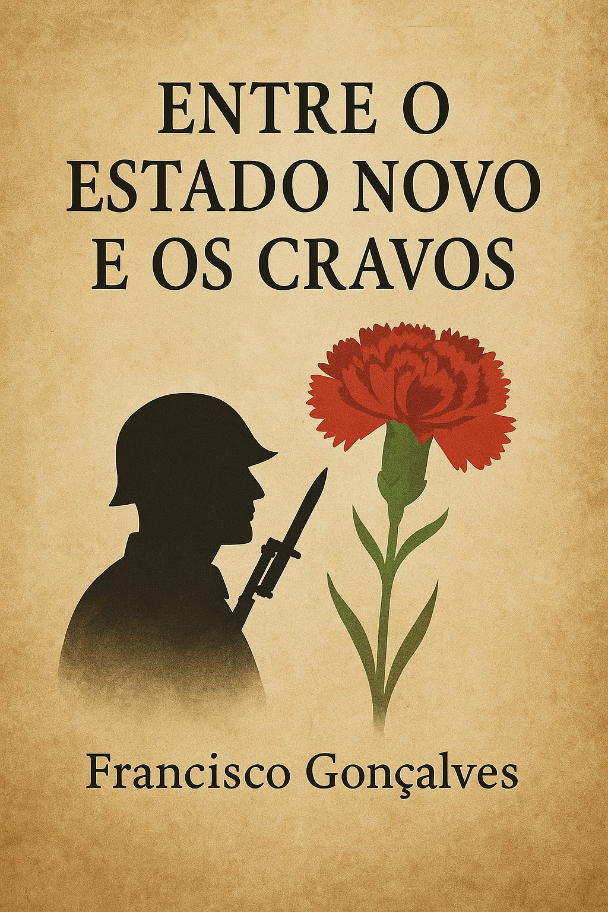

📚 Visita também a Biblioteca Fragmentos do Caos para mais obras livres e incendiárias.
Entre o Estado Novo e os Cravos
“Entre a submissão e a esperança, há um país que ainda não terminou de nascer.” Este livro é um mergulho crítico e poético na travessia de Portugal entre o Estado Novo e o 25 de Abril. Francisco Gonçalves dá voz aos esquecidos, aos que resistiram em silêncio, e à cidadania que ainda pulsa, entre sonhos interrompidos e revoluções por cumprir. É uma obra que ilumina — e inquieta. Porque recordar não basta. É preciso reconstruir.
Por Francisco Gonçalves
📚 Visita também a Blog Fragmentos do Caos para mais obras livres e incendiárias.